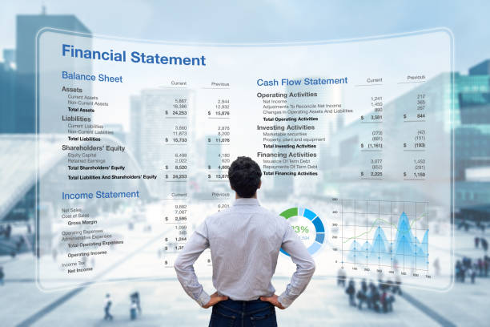

Какво представлява бизнес планът за банка?
- Готовият за банка бизнес план включва всички необходими елементи, които банковият кредитен инспектор трябва да види, преди да одобри финансирането. Този бизнес план за стартиране, насочен към банкови заеми, е фокусиран върху професионално разработени финансови данни, които показват способността за успешно изплащане на банков заем, като същевременно подчертава опита на ръководството на компанията;
- Банковите бизнес планове предоставят лесно разбираем и директен преглед на очакваните продукти и услуги на компанията. Тъй като банките могат да разглеждат много бизнес планове на ден, тези планове са приоритизирани да бъдат лесни за четене, с ясни финансови данни и подчертани силни страни на вашата компания;
Защо имате нужда от бизнес план за банков заеми?
- Банковите бизнес планове са най-традиционната форма на бизнес планиране, и поради това банковите кредитни инспектори са запознати с това, какво трябва и какво не трябва да бъде включено в такъв план. Те очакват да намерят ясни финансови данни, както и умна информация за ръководството, концепцията и целевия пазар, без да е необходимо да я търсят;
- Персонализираният бизнес план, изготвен от нас, е съобразен с нуждите на банковите кредитни инспектори, като предоставя необходимата информация бързо и впечатлява със своята професионалност;
Какво може да ви попречи да получите бизнес заем?
- Лоша кредитна история;
- Недостатъчен паричен поток;
- Липса на бизнес план;
- Много подадени заявления за заем;
- Лошо структуриран бизнес план;
- Липса на консултация с експерт;
- Дълго време за одобрение на финансирането;
- Сложен процес и безкрайна документация;
Преглед на бизнес план
- Встъпително резюме в зависимост от това дали компанията е стартираща или желае разширение на бизнеса си;
- Продукти или услуги предлагани от компанията;
- Вид на Кредита, необходим за развитието на компанията;
- Финансовите цели, които трябва да се постигнат;
- Погасяване на дълга към банката – подготвяне на погасителни планове;
Представяне на проекта и предлаганата услуга
- Описание на идеята за развитие на този проект;
- Готовност за реализация;
- Конкурентни предимства;
- Описание на процеса по предоставяне на услугата;
- Необходимо ли е закупуване на технологично оборудване и какво ще бъде то (капацитет, ниво, цена);

Анализ на средата
- Описание на бранша. Тенденции за развитие;
- Конкуренти и предлагани от тях услуги;
- Доставчици на услугите;
- Потребители;
- Конкуренти и конкурентни цени;
- Пазарен потенциал;
Текущо състояние
- Сфера на дейност;
- Опит на партньорите;
- Необходими ресурси;
- Текущо състояние - Отчет за приходите разходите;

Прогнозни финансови разчети
- Инвестиционни разходи;
- Източници на финансиране;
- Заемен капитал, акционерен капитал, собствен принос, др.;
- Налично обезпечение за гарантиране пред кредитни институции;
- Формиране на пълната себестойност на услугите и стоките, които ще се предлагат;
- Прогнозни приходи и разходи;
- Прогнозни парични потоци;
- Финансови показатели и оценка на проекта;